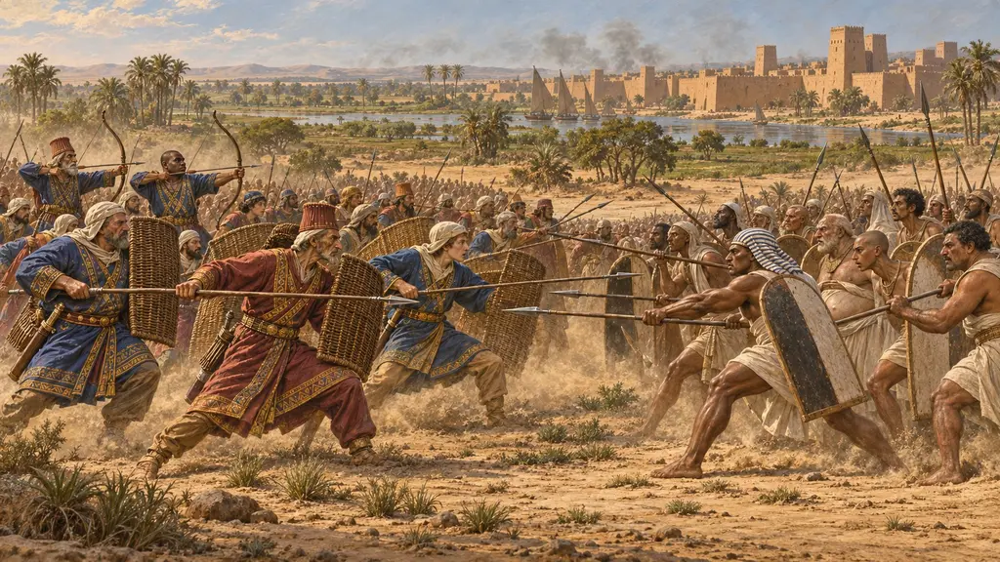
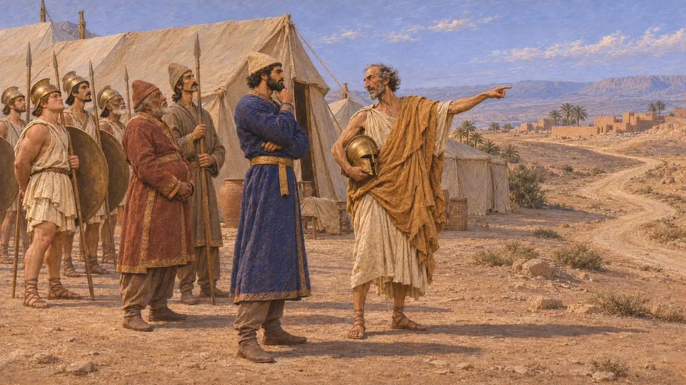
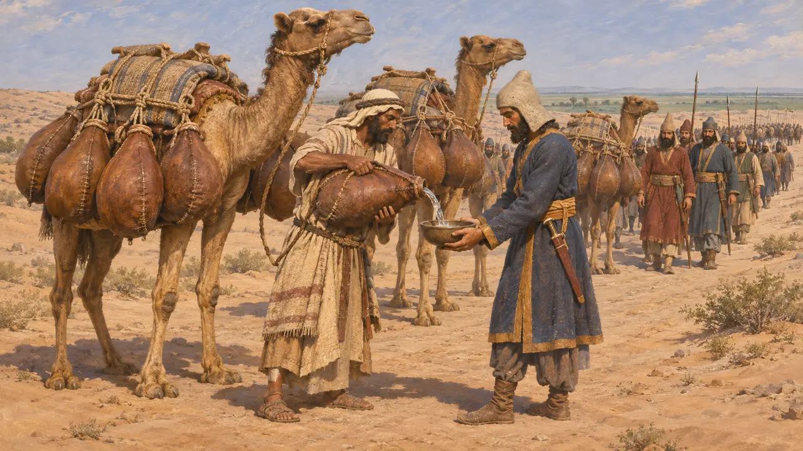
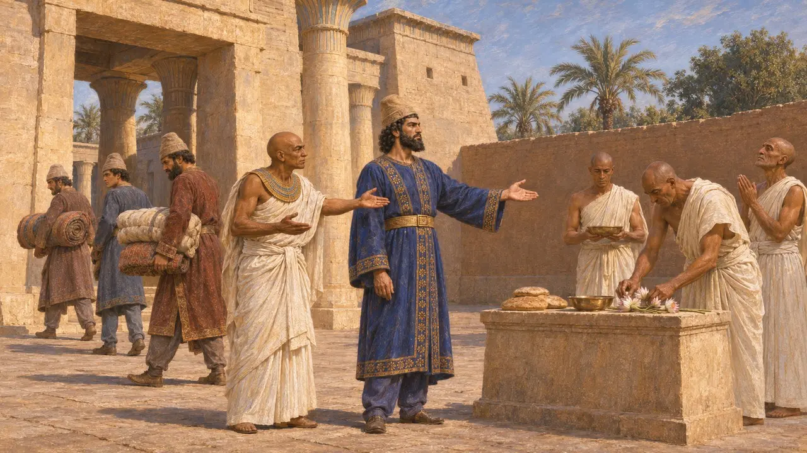
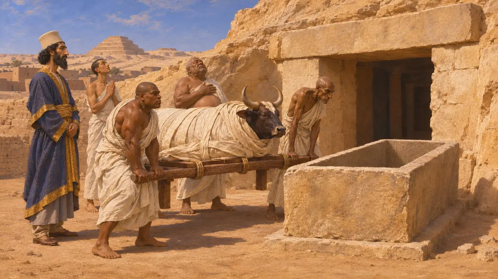
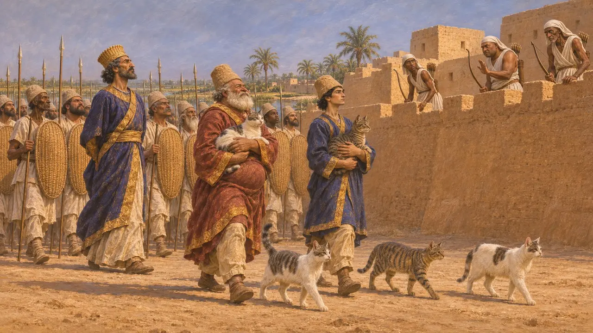

فتح قمبيز لمصر
الغزو الفارسي وفتح مملكة الفرعون، بيلوزيوم ومنف، 525 ق.م
في اللعبة: المستوى 1: ضريح المؤسس، المستوى 2: حامل الرمح
في عام 525 ق.م قاد قمبيز، ابن قورش، جيشًا فارسيًا تسانده سفن فينيقية وقبرصية ويونانية ضد مصر، آخر مملكة كبرى مستقلة في الشرق الأدنى. وبعد انتصار في بيلوزيوم واستسلام منف، جعل مصر ساترابية وحكمها بوصفه فرعونًا. ويقول هيرودوت إن بسماتيك الثالث نجا في البداية، لكنه أُعدم حين قُبض عليه وهو يحرّض على الثورة.
في اللعبة: تضع مرحلة منف الحملة في عام 525 ق.م، إذ يرشد فانيس الجيش، ويمدّه العرب بالماء، ويرافقه أسطول فينيقي، كما يرويه هيرودوت. أما الأسطول الحقيقي فضم أيضًا سفنًا قبرصية ويونانية.

لماذا زحف قمبيز
رواية قديمةيقول هيرودوت إن قمبيز عدّ اليونانيين الأيونيين والأيوليين ضمن الرعايا الذين ورثهم عن قورش، وإنه اصطحبهم معه في حملته على مصر. وكسبت الحملة دليلاً حين انشقّ فانيس الهاليكارناسي، وهو ضابط مرتزق في خدمة الفرعون أماسيس، وانحاز إلى الفرس، ونصحهم بأن يطلبوا من ملك العرب السماح لهم بالمرور الآمن. ومات أماسيس قبل الغزو، ويجعل هيرودوت حكم ابنه بسماتيك الثالث ستة أشهر فقط.
Herodotus 2.1; 3.1-4; 3.10-14

عبر الصحراء إلى بيلوزيوم ومنف
رواية قديمةيروي هيرودوت أن ملك العرب حمّل الجمال قِرَب الماء ووضعها على طريق الصحراء. ويذكر أيضًا قصة عن أنبوب من الجلد يمتد من نهر، ويراها أقل تصديقًا. والتقى الجيشان عند بيلوزيوم على الحافة الشرقية للدلتا، حيث هُزم المصريون هزيمة منكرة وفرّوا إلى منف. ولما قتل المصريون هناك رسولًا فارسيًا وطاقم سفينته، حاصر قمبيز المدينة حتى استسلمت.
Herodotus 3.7-13

الفرعون في عيون المصريين
في السجلاتيذكر تمثال وجاحور رسنت المنقوش، وهو قائد بحري في عهد أماسيس وبسماتيك الثالث، أنه خدم قمبيز وصاغ ألقابه الملكية، ومنها اسم العرش مسوتي رع. ويذكر كذلك أنه أقنع الملك بإخراج الأجانب من معبد نيت في سايس وإعادة طقوسه. أما نقش داريوس في بهستون فلا يقول إلا إن قمبيز ذهب إلى مصر وإن الخيانة انتشرت في الداخل أثناء غيابه.
Statue of Udjahorresnet (Vatican Museums); DB §10

مجنون أم حاكم حصيف
متنازع عليهيقول هيرودوت، نقلًا عن مخبرين مصريين، إن قمبيز طعن الثور أبيس وإنه مات من الجرح. غير أن لوحًا تذكاريًا وتابوتًا حجريًا منقوشًا من سراديب أبيس في سقارة يدلان على أن أبيس دُفن بإكرام في 524 ق.م، وأن قمبيز هو من قدّم التابوت، وأن أبيس التالي عاش حتى عهد داريوس. ويرجع كثير من المؤرخين رواية الجنون إلى حنق الكهنة من تخفيضات أجراها قمبيز على إيرادات المعابد، وهو ما يذكره نص ديموطيقي متأخر.
Herodotus 3.27-29; Apis stela of Cambyses' year 6 (Louvre)

العرائس الزائفات والقطط المقدسة
أسطورة لاحقةينقل هيرودوت روايات تقول إن قمبيز خاض الحرب لأن أماسيس أرسل إليه عروسًا مزيفة هي نيتيتيس، ابنة الفرعون السابق أبريس، بدلًا من ابنته هو. وينقل أيضًا زعمًا مصريًا بأن قمبيز كان ابن نيتيتيس، وهو زعم يرفضه. وبعد ذلك بزمن طويل روى بوليانوس أن قمبيز وضع الحيوانات المقدسة عند المصريين أمام جنوده في بيلوزيوم كي لا يرمي المدافعون سهامهم. ولا يؤيد هذه الروايات أي مصدر من ذلك العصر.
Herodotus 3.1-3; Polyaenus, Stratagems 7.9
المصادر
- Herodotus 3.1-16
- Herodotus 3.27-29
- Statue of Udjahorresnet (Vatican Museums)
- Apis stela of Cambyses' year 6, Serapeum of Saqqara (Louvre)
- DB §10
- P. Briant, From Cyrus to Alexander, 2002